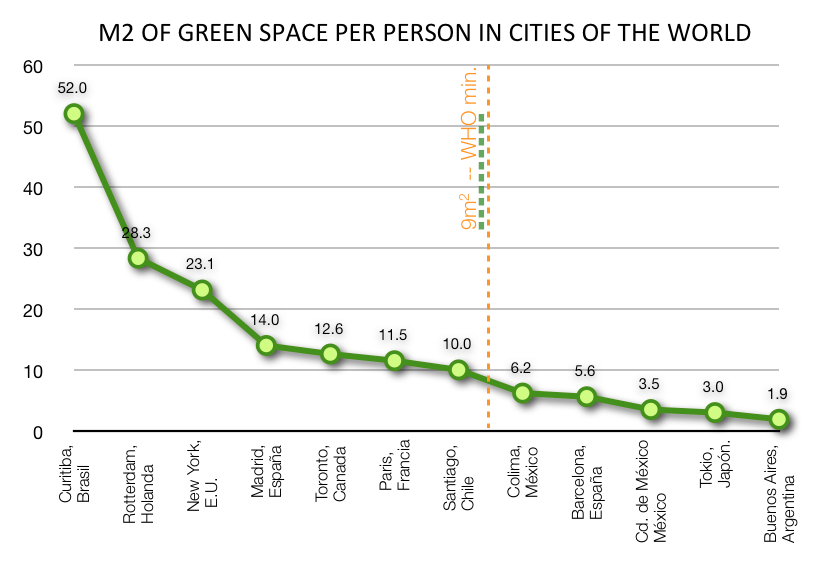

SDG 11, Indicator 7 aims to provide universal access to accessible, green, and public spaces, recognizing the importance of these spaces for the health and well-being of urban populations.
Solutions that have been proposed include developing parks and green spaces, promoting sustainable urban design, and increasing public awareness of the benefits of green spaces.
Many countries, NGOs, and companies around the world have taken steps towards providing universal access to green and public spaces.
For example, Singapore has implemented a national park system, and the Trust for Public Land works to create parks and open spaces in urban areas.
Companies such as Timberland have developed green spaces in urban areas to promote access to nature.
It is essential to continue efforts to provide universal access to accessible, green, and public spaces to improve the quality of life for urban populations.
